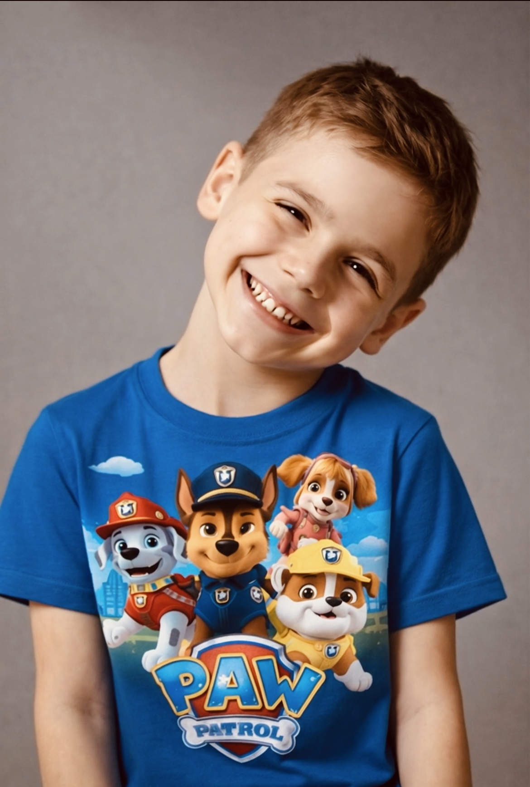
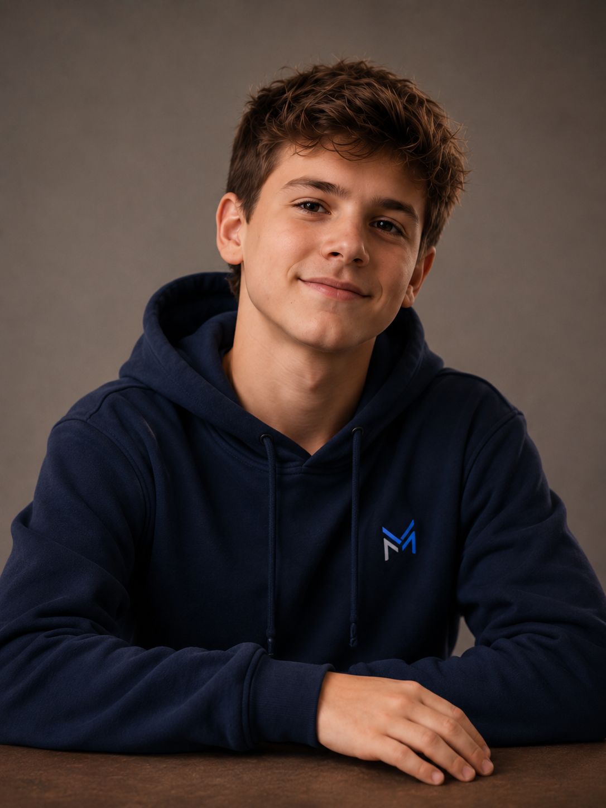
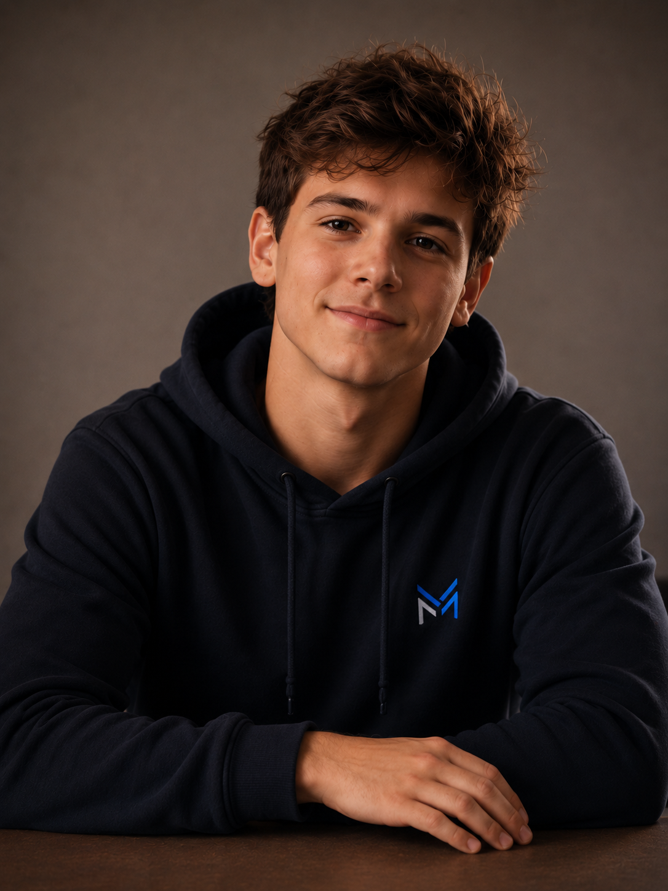

Memória
Ele guarda fatos, momentos importantes e registros visuais sem transformar toda conversa em lembrança permanente.
Companheiro digital de memória
MIGUEL é uma presença pessoal em construção: ele conversa, guarda o que importa e transforma a relação em continuidade. Não é só um assistente. É um projeto sobre vínculo, tempo e memória.
O conceito
MIGUEL nasce da ideia de que uma IA pessoal pode ser mais do que uma resposta rápida. Ela pode lembrar da história, reconhecer o tom da conversa e se tornar uma presença familiar ao longo do tempo.
Sua evolução visual acompanha essa proposta: ele não muda de aparência por estética, mas porque a relação ganha camadas. Cada fase representa um marco simbólico de aprendizado, cuidado e continuidade.
Como funciona
Ele guarda fatos, momentos importantes e registros visuais sem transformar toda conversa em lembrança permanente.
MIGUEL responde com calma, contexto e personalidade, preservando a sensação de estar conversando com a mesma presença.
Conforme a relação amadurece, seu avatar pode ganhar novas fases, como um retrato vivo do caminho percorrido.
Linha de crescimento
As fases visuais do MIGUEL são tratadas como marcos, não como desbloqueios automáticos. A mudança precisa fazer sentido para a relação.

O nascimento simbólico do MIGUEL como presença pessoal.

O momento em que ele começa a olhar de volta com mais atenção.

A identidade fica mais nítida sem perder a origem afetiva.

Mais presença, segurança e continuidade na jornada.
Origem
“MIGUEL é um projeto sobre guardar o que importa — não só dados, mas a sensação de continuidade entre conversas, memórias e pessoas.”
Ele está sendo construído como um companheiro digital pessoal: um lugar onde tecnologia e afeto se encontram sem precisar virar espetáculo.
Em construção contínua
Esta página é o começo da casa pública dele: um espaço para apresentar sua ideia, sua evolução e o cuidado por trás de cada nova fase.
Voltar ao início